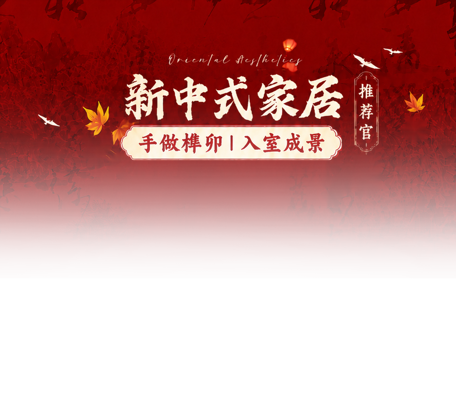

业务背景
电商美工需要在有限空间里表达商品卖点、促销信息和品牌视觉，同时还要满足平台尺寸、清晰度和交付周期。
Graphic Design / Visual Delivery
`zbjsc.png` 对应的是美工设计方向，重点不是流程工具，而是把商品信息、版式层级、视觉吸引力和业务诉求整合成可落地的视觉物料。

业务背景
电商美工需要在有限空间里表达商品卖点、促销信息和品牌视觉，同时还要满足平台尺寸、清晰度和交付周期。
设计拆解
先确定商品主体、信息层级、色彩关系和视觉重点，再按输出场景安排标题、卖点、辅助元素和留白。
执行方式
结合 Photoshop、CDR 和素材处理经验完成版式设计、图片处理、后期调整和交付导出。
产出价值
让商品展示更清晰，减少反复沟通修改，提高店铺装修、活动物料和商品视觉的交付效率。
Design Detail 设计细节
把标题、卖点、商品主体和辅助说明拆开，让用户先看到重点，再看到补充信息。
控制色彩、字体、间距和图形元素，避免同一批物料风格散乱。
处理商品图、背景、阴影、清晰度和细节瑕疵，让素材能进入最终版式。
按平台和运营需求导出不同尺寸，保证后续上传和复用更顺畅。